Québec grandpaternal age effects
Loading details
library(data.table); library(ggplot2); library(knitr); library(lme4);
opts_chunk$set(warning=TRUE, cache=TRUE,tidy=FALSE,autodep=TRUE,dev=c('png','pdf'),fig.width=20,fig.height=12.5,out.width='1440px',out.height='900px',cache.extra=file.info('rpqa.rdata')[, 'mtime'])
source("0__helpers.R")
load("rpqa.rdata")
grandparent = rpqa[, list(idIndividu, ddate, bdate)]
names(grandparent) = c("idPaternalGrandfather", "ddate.paternalGrandfather", "bdate.paternalGrandfather")
rpqa = merge(rpqa, grandparent, by = "idPaternalGrandfather", all.x = T)
names(grandparent) = c("idMaternalGrandfather", "ddate.maternalGrandfather", "bdate.maternalGrandfather")
rpqa = merge(rpqa, grandparent, by = "idMaternalGrandfather", all.x = T)
names(grandparent) = c("idPaternalGrandmother", "ddate.paternalGrandmother", "bdate.paternalGrandmother")
rpqa = merge(rpqa, grandparent, by = "idPaternalGrandmother", all.x = T)
names(grandparent) = c("idMaternalGrandmother", "ddate.maternalGrandmother", "bdate.maternalGrandmother")
rpqa = merge(rpqa, grandparent, by = "idMaternalGrandmother", all.x = T)
library(lubridate)
rpqa$maternalgrandfatherloss = factor(rpqa$bdate + years(5) > rpqa$ddate.maternalGrandfather,exclude = NULL)
rpqa$paternalgrandfatherloss = factor(rpqa$bdate + years(5) > rpqa$ddate.paternalGrandfather,exclude = NULL)
rpqa$maternalgrandmotherloss = factor(rpqa$bdate + years(5) > rpqa$ddate.maternalGrandmother,exclude = NULL)
rpqa$paternalgrandmotherloss = factor(rpqa$bdate + years(5) > rpqa$ddate.paternalGrandmother,exclude = NULL)
crosstabs(rpqa$maternalgrandfatherloss)## rpqa$maternalgrandfatherloss
## FALSE TRUE <NA>
## 152091 194635 112865rpqa[,idPaternalGrandparents := paste(idPaternalGrandfather, idPaternalGrandmother)]
rpqa[,idMaternalGrandparents := paste(idMaternalGrandfather, idMaternalGrandmother)]
rpqa = recenter.pat(rpqa, what = "paternal.grandpaternalage", among_who = "idPaternalGrandparents")
rpqa = recenter.pat(rpqa, what = "maternal.grandpaternalage", among_who = "idMaternalGrandparents")
rpqa.with.paternalage = subset(rpqa, subset = !is.na(paternalage) )
rpqa.1 = subset(rpqa.with.paternalage, subset = year(bdate) <= 1750 & year(bdate) >= 1630)
(quintiles = quantile(year(rpqa.1$bdate), seq(0,1,by=0.2), na.rm=T))## 0% 20% 40% 60% 80% 100%
## 1630 1703 1722 1734 1743 1750quintiles[1]=quintiles[1]-1
rpqa.1[, birth.cohort := cut(year(bdate),breaks = quintiles,dig.lab = 10)]Analysis description
Data subset
The rpqa.1 dataset contains only those participants where paternal age is known and the birthdate is between 1630 and 1750.
Model description
All of the following models have the following in common:
Optimizer settings
Bobyqa is fairly robust to convergence failures. In addition to using Bobyqa, we center some variables that otherwise lead to large eigenvalues.
control_defaults = glmerControl(optimizer = "bobyqa")Covariates
As in our main models, we control for birth.cohort (birth years in five equally large bins), male sex. Additionally, we control for paternal and maternal loss (whether either parent died within 5 years of the birth), for maternal age (bins of 14-20, 20-35 and 35-50), the number of siblings.
Model stratification
We added random intercepts for each family (father-mother dyad). We then controlled for the average paternal age in the family. Hence, the paternal age effects in the plot are split into those between families and those within families or between siblings. The relevant effect for our hypothesized mechanism, de novo mutations, is paternal age between siblings.
Episodes of selection
Here, episodes of selection refers to survival, mating success, reproductive success. To steer clear of sacrificial pseudo-replication, we make sure that each effect cannot be explained by the episode of selection preceding it. At its simplest, we check for effect on survival to reproduction only among those who lived to their first birthday. In later models, we look for an effect on number of children only among those who married and control their number of spouses.
Survival to first year
Survive_infancy = glmer(
survive1y ~ birth.cohort + male + urban + paternalage.mean + paternalage.diff + maternal.grandpaternalage.diff + maternal.grandpaternalage.mean + paternal.grandpaternalage.diff + paternal.grandpaternalage.mean + (1|idParents) + (1|idPaternalGrandparents) + (1|idMaternalGrandparents),
data= rpqa.1, control = control_defaults,
family='binomial' )
summary(Survive_infancy)## Generalized linear mixed model fit by maximum likelihood (Laplace
## Approximation) [glmerMod]
## Family: binomial ( logit )
## Formula: survive1y ~ birth.cohort + male + urban + paternalage.mean +
## paternalage.diff + maternal.grandpaternalage.diff + maternal.grandpaternalage.mean +
## paternal.grandpaternalage.diff + paternal.grandpaternalage.mean +
## (1 | idParents) + (1 | idPaternalGrandparents) + (1 | idMaternalGrandparents)
## Data: rpqa.1
## Control: control_defaults
##
## AIC BIC logLik deviance df.resid
## 67674 67820 -33821 67642 68285
##
## Scaled residuals:
## Min 1Q Median 3Q Max
## -4.291 0.279 0.397 0.510 1.891
##
## Random effects:
## Groups Name Variance Std.Dev.
## idParents (Intercept) 0.3072 0.554
## idMaternalGrandparents (Intercept) 0.1617 0.402
## idPaternalGrandparents (Intercept) 0.0835 0.289
## Number of obs: 68301, groups:
## idParents, 11784; idMaternalGrandparents, 5537; idPaternalGrandparents, 5078
##
## Fixed effects:
## Estimate Std. Error z value Pr(>|z|)
## (Intercept) 1.9634 0.0507 38.8 < 2e-16 ***
## birth.cohort(1703,1722] 0.1613 0.0514 3.1 0.0017 **
## birth.cohort(1722,1734] -0.2226 0.0526 -4.2 0.000023298 ***
## birth.cohort(1734,1743] -0.3028 0.0534 -5.7 0.000000014 ***
## birth.cohort(1743,1750] -0.7295 0.0534 -13.7 < 2e-16 ***
## male -0.2575 0.0202 -12.8 < 2e-16 ***
## urban -0.8022 0.0327 -24.6 < 2e-16 ***
## paternalage.mean 0.0481 0.0216 2.2 0.0257 *
## paternalage.diff -0.2559 0.0191 -13.4 < 2e-16 ***
## maternal.grandpaternalage.diff -0.0778 0.0247 -3.2 0.0016 **
## maternal.grandpaternalage.mean 0.0121 0.0185 0.7 0.5137
## paternal.grandpaternalage.diff -0.0310 0.0254 -1.2 0.2226
## paternal.grandpaternalage.mean 0.0164 0.0181 0.9 0.3674
## ---
## Signif. codes: 0 '***' 0.001 '**' 0.01 '*' 0.05 '.' 0.1 ' ' 1
##
## Correlation of Fixed Effects:
## (Intr) b.(170 b.(172 b.(173 b.(174 male urban
## b.(1703,172 -0.776
## b.(1722,173 -0.842 0.777
## b.(1734,174 -0.859 0.753 0.835
## b.(1743,175 -0.876 0.748 0.821 0.854
## male -0.214 -0.007 -0.003 0.000 0.002
## urban -0.195 0.037 0.052 0.069 0.079 0.025
## paternlg.mn 0.060 -0.054 -0.051 -0.054 -0.057 0.003 -0.001
## patrnlg.dff 0.198 -0.103 -0.137 -0.185 -0.219 0.011 -0.008
## mtrnl.grndptrnlg.d 0.092 -0.040 -0.051 -0.065 -0.075 0.001 -0.038
## mtrnl.grndptrnlg.m -0.080 -0.006 0.012 0.023 0.035 -0.004 -0.006
## ptrnl.grndptrnlg.d 0.098 -0.038 -0.052 -0.064 -0.080 0.001 -0.023
## ptrnl.grndptrnlg.m -0.062 -0.026 -0.021 -0.006 0.008 0.000 -0.002
## ptrnlg.m ptrnlg.d mtrnl.grndptrnlg.d mtrnl.grndptrnlg.m
## b.(1703,172
## b.(1722,173
## b.(1734,174
## b.(1743,175
## male
## urban
## paternlg.mn
## patrnlg.dff 0.030
## mtrnl.grndptrnlg.d 0.009 0.036
## mtrnl.grndptrnlg.m -0.043 -0.031 -0.005
## ptrnl.grndptrnlg.d 0.061 0.040 -0.021 -0.013
## ptrnl.grndptrnlg.m -0.044 -0.027 -0.005 -0.009
## ptrnl.grndptrnlg.d
## b.(1703,172
## b.(1722,173
## b.(1734,174
## b.(1743,175
## male
## urban
## paternlg.mn
## patrnlg.dff
## mtrnl.grndptrnlg.d
## mtrnl.grndptrnlg.m
## ptrnl.grndptrnlg.d
## ptrnl.grndptrnlg.m 0.011Survive_infancy_coefs = fortify_mine(Survive_infancy)
plot_fortified_mer(Survive_infancy_coefs, "Surviving infancy / first year")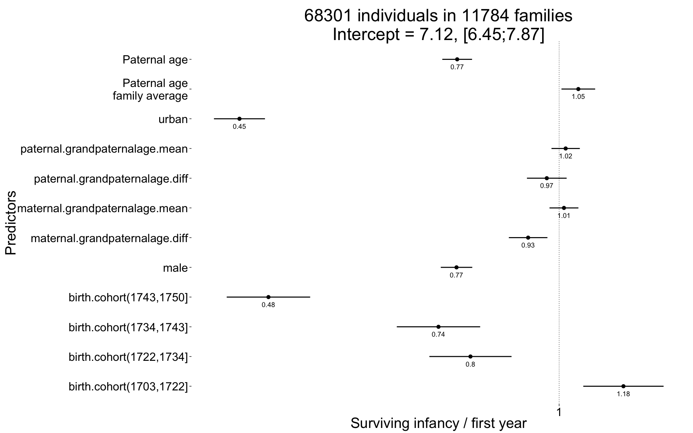
Survival to reproductive age
Survive_reproductive = glmer(
surviveR ~ birth.cohort + male + urban + paternalage.mean + paternalage.diff + maternal.grandpaternalage.diff + maternal.grandpaternalage.mean + paternal.grandpaternalage.diff + paternal.grandpaternalage.mean + (1|idParents) + (1|idPaternalGrandparents) + (1|idMaternalGrandparents),
data= rpqa.1, subset = survive1y == TRUE & byear < 1740, control = control_defaults,
family='binomial')
summary(Survive_reproductive)## Generalized linear mixed model fit by maximum likelihood (Laplace
## Approximation) [glmerMod]
## Family: binomial ( logit )
## Formula:
## surviveR ~ birth.cohort + male + urban + paternalage.mean + paternalage.diff +
## maternal.grandpaternalage.diff + maternal.grandpaternalage.mean +
## paternal.grandpaternalage.diff + paternal.grandpaternalage.mean +
## (1 | idParents) + (1 | idPaternalGrandparents) + (1 | idMaternalGrandparents)
## Data: rpqa.1
## Control: control_defaults
## Subset: survive1y == TRUE & byear < 1740
##
## AIC BIC logLik deviance df.resid
## 26446 26573 -13208 26416 36615
##
## Scaled residuals:
## Min 1Q Median 3Q Max
## -4.345 0.271 0.313 0.366 0.959
##
## Random effects:
## Groups Name Variance Std.Dev.
## idParents (Intercept) 0.1940 0.440
## idMaternalGrandparents (Intercept) 0.0584 0.242
## idPaternalGrandparents (Intercept) 0.1164 0.341
## Number of obs: 36630, groups:
## idParents, 7615; idMaternalGrandparents, 3703; idPaternalGrandparents, 3482
##
## Fixed effects:
## Estimate Std. Error z value Pr(>|z|)
## (Intercept) 2.4067 0.0628 38.3 < 2e-16 ***
## birth.cohort(1703,1722] -0.0443 0.0628 -0.7 0.48052
## birth.cohort(1722,1734] -0.4036 0.0630 -6.4 1.5e-10 ***
## birth.cohort(1734,1743] -0.0498 0.0707 -0.7 0.48138
## male -0.0752 0.0335 -2.2 0.02464 *
## urban -0.7965 0.0461 -17.3 < 2e-16 ***
## paternalage.mean 0.0671 0.0326 2.1 0.03939 *
## paternalage.diff -0.1049 0.0311 -3.4 0.00074 ***
## maternal.grandpaternalage.diff -0.1378 0.0368 -3.7 0.00018 ***
## maternal.grandpaternalage.mean 0.0343 0.0257 1.3 0.18220
## paternal.grandpaternalage.diff -0.1110 0.0377 -2.9 0.00323 **
## paternal.grandpaternalage.mean 0.0554 0.0267 2.1 0.03753 *
## ---
## Signif. codes: 0 '***' 0.001 '**' 0.01 '*' 0.05 '.' 0.1 ' ' 1
##
## Correlation of Fixed Effects:
## (Intr) b.(170 b.(172 b.(173 male urban ptrnlg.m
## b.(1703,172 -0.764
## b.(1722,173 -0.818 0.776
## b.(1734,174 -0.742 0.685 0.741
## male -0.267 -0.006 -0.002 0.005
## urban -0.227 0.050 0.068 0.071 0.035
## paternlg.mn 0.056 -0.072 -0.066 -0.057 0.007 -0.002
## patrnlg.dff 0.202 -0.118 -0.159 -0.170 0.003 -0.007 0.032
## mtrnl.grndptrnlg.d 0.081 -0.045 -0.052 -0.053 -0.003 -0.033 0.005
## mtrnl.grndptrnlg.m -0.084 -0.017 0.010 0.020 -0.007 -0.008 -0.031
## ptrnl.grndptrnlg.d 0.116 -0.056 -0.075 -0.083 -0.002 -0.029 0.057
## ptrnl.grndptrnlg.m -0.062 -0.037 -0.033 -0.016 0.002 0.004 -0.024
## ptrnlg.d mtrnl.grndptrnlg.d mtrnl.grndptrnlg.m
## b.(1703,172
## b.(1722,173
## b.(1734,174
## male
## urban
## paternlg.mn
## patrnlg.dff
## mtrnl.grndptrnlg.d 0.018
## mtrnl.grndptrnlg.m -0.023 -0.004
## ptrnl.grndptrnlg.d 0.033 -0.028 -0.020
## ptrnl.grndptrnlg.m -0.016 0.005 -0.009
## ptrnl.grndptrnlg.d
## b.(1703,172
## b.(1722,173
## b.(1734,174
## male
## urban
## paternlg.mn
## patrnlg.dff
## mtrnl.grndptrnlg.d
## mtrnl.grndptrnlg.m
## ptrnl.grndptrnlg.d
## ptrnl.grndptrnlg.m 0.019Survive_reproductive_coefs = fortify_mine(Survive_reproductive)
plot_fortified_mer(Survive_reproductive_coefs, "Surviving to reproductive age / 15 years")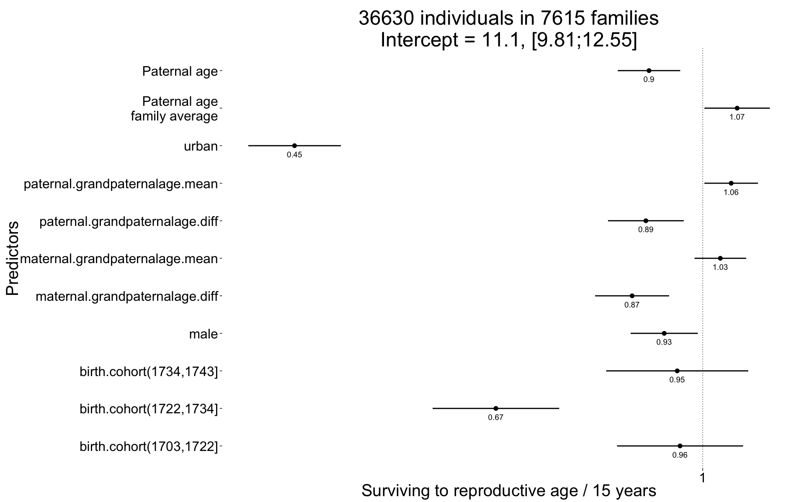
Ever married
Ever_married <- glmer(
ever_married ~ birth.cohort + male + urban + paternalage.mean + paternalage.diff + maternal.grandpaternalage.diff + maternal.grandpaternalage.mean + paternal.grandpaternalage.diff + paternal.grandpaternalage.mean + (1|idParents) + (1|idPaternalGrandparents) + (1|idMaternalGrandparents),
data= rpqa.1, subset = surviveR == T & byear < 1725, control = control_defaults,
family='binomial' )
summary(Ever_married)## Generalized linear mixed model fit by maximum likelihood (Laplace
## Approximation) [glmerMod]
## Family: binomial ( logit )
## Formula: ever_married ~ birth.cohort + male + urban + paternalage.mean +
## paternalage.diff + maternal.grandpaternalage.diff + maternal.grandpaternalage.mean +
## paternal.grandpaternalage.diff + paternal.grandpaternalage.mean +
## (1 | idParents) + (1 | idPaternalGrandparents) + (1 | idMaternalGrandparents)
## Data: rpqa.1
## Control: control_defaults
## Subset: surviveR == T & byear < 1725
##
## AIC BIC logLik deviance df.resid
## 13281 13389 -6626 13253 16667
##
## Scaled residuals:
## Min 1Q Median 3Q Max
## -3.712 0.286 0.336 0.397 0.950
##
## Random effects:
## Groups Name Variance Std.Dev.
## idParents (Intercept) 0.220 0.469
## idMaternalGrandparents (Intercept) 0.145 0.381
## idPaternalGrandparents (Intercept) 0.129 0.359
## Number of obs: 16681, groups:
## idParents, 3996; idMaternalGrandparents, 2123; idPaternalGrandparents, 1955
##
## Fixed effects:
## Estimate Std. Error z value Pr(>|z|)
## (Intercept) 2.1144 0.0698 30.30 < 2e-16 ***
## birth.cohort(1703,1722] 0.1110 0.0627 1.77 0.0768 .
## birth.cohort(1722,1734] 0.2347 0.0983 2.39 0.0169 *
## male -0.3194 0.0474 -6.74 1.6e-11 ***
## urban -0.5371 0.0699 -7.68 1.6e-14 ***
## paternalage.mean -0.1532 0.0483 -3.17 0.0015 **
## paternalage.diff -0.0720 0.0435 -1.66 0.0976 .
## maternal.grandpaternalage.diff -0.0743 0.0534 -1.39 0.1638
## maternal.grandpaternalage.mean -0.0456 0.0389 -1.17 0.2412
## paternal.grandpaternalage.diff -0.1052 0.0552 -1.91 0.0564 .
## paternal.grandpaternalage.mean 0.0230 0.0395 0.58 0.5609
## ---
## Signif. codes: 0 '***' 0.001 '**' 0.01 '*' 0.05 '.' 0.1 ' ' 1
##
## Correlation of Fixed Effects:
## (Intr) b.(170 b.(172 male urban ptrnlg.m ptrnlg.d
## b.(1703,172 -0.693
## b.(1722,173 -0.477 0.522
## male -0.370 -0.015 -0.012
## urban -0.265 0.077 0.060 0.030
## paternlg.mn 0.033 -0.126 -0.087 0.020 0.004
## patrnlg.dff 0.294 -0.244 -0.184 -0.009 -0.007 0.105
## mtrnl.grndptrnlg.d 0.115 -0.084 -0.054 0.000 -0.017 0.008 0.033
## mtrnl.grndptrnlg.m -0.116 -0.036 -0.003 0.005 -0.006 -0.029 -0.002
## ptrnl.grndptrnlg.d 0.136 -0.098 -0.082 0.004 -0.014 0.108 0.065
## ptrnl.grndptrnlg.m -0.080 -0.076 -0.056 -0.002 0.024 0.032 0.040
## mtrnl.grndptrnlg.d mtrnl.grndptrnlg.m
## b.(1703,172
## b.(1722,173
## male
## urban
## paternlg.mn
## patrnlg.dff
## mtrnl.grndptrnlg.d
## mtrnl.grndptrnlg.m 0.058
## ptrnl.grndptrnlg.d -0.034 -0.002
## ptrnl.grndptrnlg.m -0.006 -0.020
## ptrnl.grndptrnlg.d
## b.(1703,172
## b.(1722,173
## male
## urban
## paternlg.mn
## patrnlg.dff
## mtrnl.grndptrnlg.d
## mtrnl.grndptrnlg.m
## ptrnl.grndptrnlg.d
## ptrnl.grndptrnlg.m 0.083Ever_married_coefs = fortify_mine(Ever_married)
plot_fortified_mer(Ever_married_coefs, "Odds of ever marrying")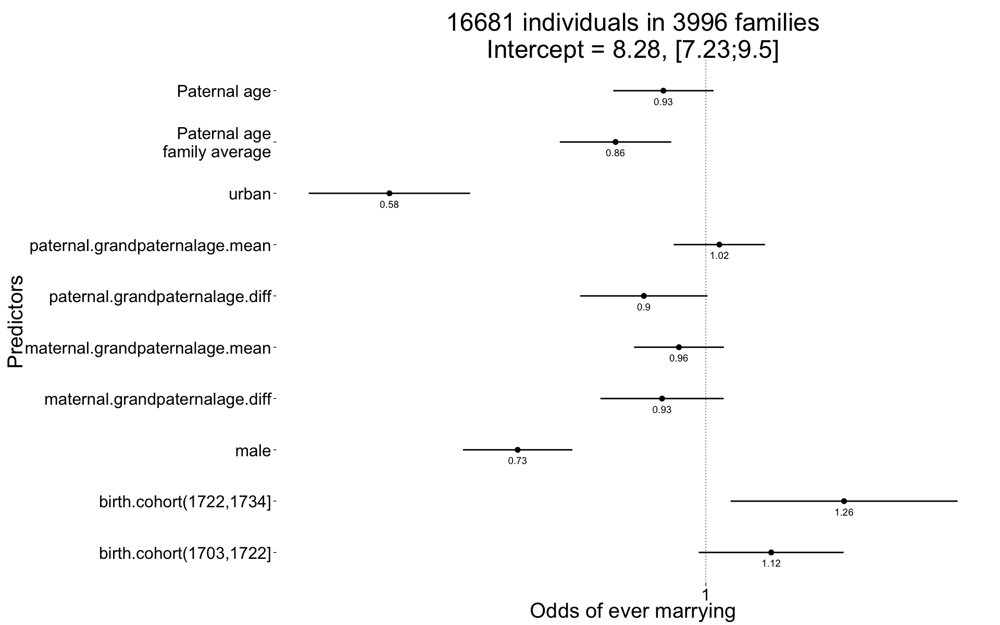
Number of children
Children <- glmer(
children ~ center(spouses)*male + birth.cohort + male + urban + paternalage.mean + paternalage.diff + maternal.grandpaternalage.diff + maternal.grandpaternalage.mean + paternal.grandpaternalage.diff + paternal.grandpaternalage.mean + (1|idParents) + (1|idPaternalGrandparents) + (1|idMaternalGrandparents),
data= rpqa.1, subset = spouses > 0 & byear < 1725,
control = control_defaults, family='poisson' )
summary(Children)## Generalized linear mixed model fit by maximum likelihood (Laplace
## Approximation) [glmerMod]
## Family: poisson ( log )
## Formula:
## children ~ center(spouses) * male + birth.cohort + male + urban +
## paternalage.mean + paternalage.diff + maternal.grandpaternalage.diff +
## maternal.grandpaternalage.mean + paternal.grandpaternalage.diff +
## paternal.grandpaternalage.mean + (1 | idParents) + (1 | idPaternalGrandparents) +
## (1 | idMaternalGrandparents)
## Data: rpqa.1
## Control: control_defaults
## Subset: spouses > 0 & byear < 1725
##
## AIC BIC logLik deviance df.resid
## 93309 93430 -46638 93277 14318
##
## Scaled residuals:
## Min 1Q Median 3Q Max
## -3.675 -1.027 0.098 0.958 5.209
##
## Random effects:
## Groups Name Variance Std.Dev.
## idParents (Intercept) 0.07009 0.2647
## idMaternalGrandparents (Intercept) 0.00679 0.0824
## idPaternalGrandparents (Intercept) 0.01254 0.1120
## Number of obs: 14334, groups:
## idParents, 3880; idMaternalGrandparents, 2079; idPaternalGrandparents, 1915
##
## Fixed effects:
## Estimate Std. Error z value Pr(>|z|)
## (Intercept) 1.9788297 0.0140803 140.5 < 2e-16
## center(spouses) 0.0401131 0.0105705 3.8 0.00015
## male -0.0098582 0.0100691 -1.0 0.32755
## birth.cohort(1703,1722] -0.0198817 0.0107013 -1.9 0.06319
## birth.cohort(1722,1734] -0.0154522 0.0156763 -1.0 0.32428
## urban -0.0714378 0.0141214 -5.1 0.000000422
## paternalage.mean -0.0348072 0.0102243 -3.4 0.00066
## paternalage.diff -0.0368797 0.0064591 -5.7 0.000000011
## maternal.grandpaternalage.diff -0.0099194 0.0115804 -0.9 0.39168
## maternal.grandpaternalage.mean -0.0063347 0.0085779 -0.7 0.46022
## paternal.grandpaternalage.diff -0.0206096 0.0117804 -1.7 0.08021
## paternal.grandpaternalage.mean -0.0000925 0.0089457 0.0 0.99175
## center(spouses):male 0.1960197 0.0128323 15.3 < 2e-16
##
## (Intercept) ***
## center(spouses) ***
## male
## birth.cohort(1703,1722] .
## birth.cohort(1722,1734]
## urban ***
## paternalage.mean ***
## paternalage.diff ***
## maternal.grandpaternalage.diff
## maternal.grandpaternalage.mean
## paternal.grandpaternalage.diff .
## paternal.grandpaternalage.mean
## center(spouses):male ***
## ---
## Signif. codes: 0 '***' 0.001 '**' 0.01 '*' 0.05 '.' 0.1 ' ' 1
##
## Correlation of Fixed Effects:
## (Intr) cntr() male b.(170 b.(172 urban ptrnlg.m
## centr(spss) -0.409
## male -0.374 0.562
## b.(1703,172 -0.663 0.011 -0.003
## b.(1722,173 -0.556 0.005 -0.001 0.671
## urban -0.200 0.009 0.010 0.051 0.051
## paternlg.mn 0.091 -0.001 0.003 -0.133 -0.110 0.014
## patrnlg.dff 0.395 -0.001 -0.012 -0.421 -0.393 -0.004 0.115
## mtrnl.grndptrnlg.d 0.108 0.002 0.002 -0.059 -0.042 -0.019 -0.001
## mtrnl.grndptrnlg.m -0.124 -0.005 -0.003 -0.018 0.000 -0.002 -0.018
## ptrnl.grndptrnlg.d 0.148 0.014 0.013 -0.086 -0.080 -0.013 0.086
## ptrnl.grndptrnlg.m -0.113 0.001 0.004 -0.054 -0.042 0.016 0.018
## cntr(spss): 0.337 -0.817 -0.762 -0.010 -0.006 -0.005 0.004
## ptrnlg.d mtrnl.grndptrnlg.d mtrnl.grndptrnlg.m
## centr(spss)
## male
## b.(1703,172
## b.(1722,173
## urban
## paternlg.mn
## patrnlg.dff
## mtrnl.grndptrnlg.d 0.030
## mtrnl.grndptrnlg.m -0.005 0.055
## ptrnl.grndptrnlg.d 0.065 -0.034 -0.005
## ptrnl.grndptrnlg.m 0.033 0.000 -0.017
## cntr(spss): 0.008 0.001 0.006
## ptrnl.grndptrnlg.d ptrnl.grndptrnlg.m
## centr(spss)
## male
## b.(1703,172
## b.(1722,173
## urban
## paternlg.mn
## patrnlg.dff
## mtrnl.grndptrnlg.d
## mtrnl.grndptrnlg.m
## ptrnl.grndptrnlg.d
## ptrnl.grndptrnlg.m 0.073
## cntr(spss): -0.018 -0.006Children_coefs = fortify_mine(Children)
plot_fortified_mer(Children_coefs, "Nr. Children (of those who had at least one spouse)")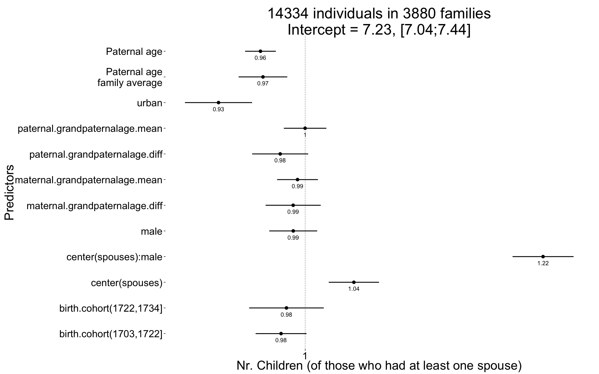
Any surviving children
Any_surviving_children <- glmer(
any_surviving_children ~ birth.cohort + male + urban + paternalage.mean + paternalage.diff + maternal.grandpaternalage.diff + maternal.grandpaternalage.mean + paternal.grandpaternalage.diff + paternal.grandpaternalage.mean + (1|idParents) + (1|idPaternalGrandparents) + (1|idMaternalGrandparents),
data= rpqa.1, subset = byear < 1735,
family = 'binomial', control = control_defaults )
summary(Any_surviving_children)## Generalized linear mixed model fit by maximum likelihood (Laplace
## Approximation) [glmerMod]
## Family: binomial ( logit )
## Formula:
## any_surviving_children ~ birth.cohort + male + urban + paternalage.mean +
## paternalage.diff + maternal.grandpaternalage.diff + maternal.grandpaternalage.mean +
## paternal.grandpaternalage.diff + paternal.grandpaternalage.mean +
## (1 | idParents) + (1 | idPaternalGrandparents) + (1 | idMaternalGrandparents)
## Data: rpqa.1
## Control: control_defaults
## Subset: byear < 1735
##
## AIC BIC logLik deviance df.resid
## 53032 53152 -26502 53004 39592
##
## Scaled residuals:
## Min 1Q Median 3Q Max
## -2.072 -0.944 0.599 0.878 2.688
##
## Random effects:
## Groups Name Variance Std.Dev.
## idParents (Intercept) 0.0993 0.315
## idMaternalGrandparents (Intercept) 0.0926 0.304
## idPaternalGrandparents (Intercept) 0.0737 0.272
## Number of obs: 39606, groups:
## idParents, 6686; idMaternalGrandparents, 3257; idPaternalGrandparents, 3056
##
## Fixed effects:
## Estimate Std. Error z value Pr(>|z|)
## (Intercept) 0.37022 0.03883 9.54 < 2e-16 ***
## birth.cohort(1703,1722] 0.03297 0.03722 0.89 0.3756
## birth.cohort(1722,1734] -0.25337 0.03954 -6.41 1.5e-10 ***
## male -0.28688 0.02155 -13.31 < 2e-16 ***
## urban -0.79422 0.03503 -22.67 < 2e-16 ***
## paternalage.mean 0.00323 0.02200 0.15 0.8834
## paternalage.diff -0.14017 0.02018 -6.95 3.8e-12 ***
## maternal.grandpaternalage.diff -0.08126 0.02490 -3.26 0.0011 **
## maternal.grandpaternalage.mean 0.00552 0.01863 0.30 0.7668
## paternal.grandpaternalage.diff -0.10601 0.02548 -4.16 3.2e-05 ***
## paternal.grandpaternalage.mean 0.00561 0.01872 0.30 0.7642
## ---
## Signif. codes: 0 '***' 0.001 '**' 0.01 '*' 0.05 '.' 0.1 ' ' 1
##
## Correlation of Fixed Effects:
## (Intr) b.(170 b.(172 male urban ptrnlg.m ptrnlg.d
## b.(1703,172 -0.764
## b.(1722,173 -0.819 0.776
## male -0.281 -0.009 -0.004
## urban -0.216 0.050 0.066 0.017
## paternlg.mn 0.074 -0.093 -0.092 0.006 0.007
## patrnlg.dff 0.286 -0.180 -0.254 0.004 -0.007 0.060
## mtrnl.grndptrnlg.d 0.123 -0.067 -0.086 0.000 -0.029 0.010 0.035
## mtrnl.grndptrnlg.m -0.101 -0.014 0.014 -0.006 -0.005 -0.030 -0.022
## ptrnl.grndptrnlg.d 0.140 -0.068 -0.090 -0.003 -0.023 0.075 0.044
## ptrnl.grndptrnlg.m -0.075 -0.047 -0.039 -0.001 0.010 -0.010 0.003
## mtrnl.grndptrnlg.d mtrnl.grndptrnlg.m
## b.(1703,172
## b.(1722,173
## male
## urban
## paternlg.mn
## patrnlg.dff
## mtrnl.grndptrnlg.d
## mtrnl.grndptrnlg.m 0.018
## ptrnl.grndptrnlg.d -0.030 -0.016
## ptrnl.grndptrnlg.m -0.005 -0.010
## ptrnl.grndptrnlg.d
## b.(1703,172
## b.(1722,173
## male
## urban
## paternlg.mn
## patrnlg.dff
## mtrnl.grndptrnlg.d
## mtrnl.grndptrnlg.m
## ptrnl.grndptrnlg.d
## ptrnl.grndptrnlg.m 0.036Any_surviving_children_coefs = fortify_mine(Any_surviving_children)
plot_fortified_mer(Any_surviving_children_coefs, "Any surviving children")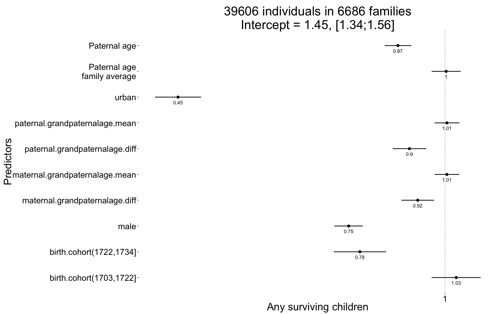
Any surviving children (controlled for grandparent loss)
Any_surviving_children_gploss <- glmer(
any_surviving_children ~ birth.cohort + male + urban + paternalage.mean + paternalage.diff + maternal.grandpaternalage.diff + maternal.grandpaternalage.mean + paternal.grandpaternalage.diff + paternal.grandpaternalage.mean + maternalgrandfatherloss + paternalgrandfatherloss + maternalgrandmotherloss + paternalgrandmotherloss + (1|idParents) + (1|idPaternalGrandparents) + (1|idMaternalGrandparents),
data= rpqa.1, subset = byear < 1735,
family = 'binomial', control = control_defaults )
summary(Any_surviving_children_gploss)## Generalized linear mixed model fit by maximum likelihood (Laplace
## Approximation) [glmerMod]
## Family: binomial ( logit )
## Formula:
## any_surviving_children ~ birth.cohort + male + urban + paternalage.mean +
## paternalage.diff + maternal.grandpaternalage.diff + maternal.grandpaternalage.mean +
## paternal.grandpaternalage.diff + paternal.grandpaternalage.mean +
## maternalgrandfatherloss + paternalgrandfatherloss + maternalgrandmotherloss +
## paternalgrandmotherloss + (1 | idParents) + (1 | idPaternalGrandparents) +
## (1 | idMaternalGrandparents)
## Data: rpqa.1
## Control: control_defaults
## Subset: byear < 1735
##
## AIC BIC logLik deviance df.resid
## 53013 53202 -26485 52969 39584
##
## Scaled residuals:
## Min 1Q Median 3Q Max
## -2.148 -0.943 0.596 0.878 2.643
##
## Random effects:
## Groups Name Variance Std.Dev.
## idParents (Intercept) 0.1025 0.320
## idMaternalGrandparents (Intercept) 0.0905 0.301
## idPaternalGrandparents (Intercept) 0.0682 0.261
## Number of obs: 39606, groups:
## idParents, 6686; idMaternalGrandparents, 3257; idPaternalGrandparents, 3056
##
## Fixed effects:
## Estimate Std. Error z value Pr(>|z|)
## (Intercept) 0.36473 0.05438 6.71 2.0e-11 ***
## birth.cohort(1703,1722] 0.05531 0.03742 1.48 0.13939
## birth.cohort(1722,1734] -0.21775 0.03996 -5.45 5.1e-08 ***
## male -0.28703 0.02155 -13.32 < 2e-16 ***
## urban -0.78296 0.03504 -22.35 < 2e-16 ***
## paternalage.mean 0.01257 0.02295 0.55 0.58389
## paternalage.diff -0.12688 0.02259 -5.62 2.0e-08 ***
## maternal.grandpaternalage.diff -0.07848 0.02644 -2.97 0.00299 **
## maternal.grandpaternalage.mean 0.00848 0.01888 0.45 0.65335
## paternal.grandpaternalage.diff -0.09013 0.02705 -3.33 0.00086 ***
## paternal.grandpaternalage.mean 0.01440 0.01903 0.76 0.44917
## maternalgrandfatherlossTRUE -0.00506 0.03032 -0.17 0.86756
## maternalgrandfatherlossNA 0.11857 0.04283 2.77 0.00564 **
## paternalgrandfatherlossTRUE -0.04052 0.03363 -1.21 0.22818
## paternalgrandfatherlossNA 0.07462 0.04389 1.70 0.08908 .
## maternalgrandmotherlossTRUE -0.03265 0.02914 -1.12 0.26243
## maternalgrandmotherlossNA 0.03747 0.04310 0.87 0.38460
## paternalgrandmotherlossTRUE -0.05388 0.02937 -1.83 0.06653 .
## paternalgrandmotherlossNA 0.02250 0.04154 0.54 0.58801
## ---
## Signif. codes: 0 '***' 0.001 '**' 0.01 '*' 0.05 '.' 0.1 ' ' 1
##
## Correlation of Fixed Effects:
## (Intr) b.(170 b.(172 male urban ptrnlg.m ptrnlg.d
## b.(1703,172 -0.513
## b.(1722,173 -0.591 0.777
## male -0.200 -0.009 -0.005
## urban -0.153 0.057 0.077 0.016
## paternlg.mn 0.223 -0.072 -0.083 0.006 0.010
## patrnlg.dff 0.481 -0.127 -0.211 0.004 0.001 0.161
## mtrnl.grndptrnlg.d 0.217 -0.045 -0.067 -0.001 -0.021 0.025 0.131
## mtrnl.grndptrnlg.m -0.020 -0.004 0.022 -0.004 -0.001 -0.016 0.019
## ptrnl.grndptrnlg.d 0.273 -0.045 -0.078 -0.003 -0.018 0.163 0.151
## ptrnl.grndptrnlg.m 0.030 -0.033 -0.029 -0.001 0.020 0.029 0.051
## mtrnlgrndfTRUE -0.310 -0.038 -0.034 -0.005 -0.021 -0.049 -0.221
## mtrnlgrndfNA -0.264 0.024 0.053 -0.003 -0.005 -0.023 -0.140
## ptrnlgrndfTRUE -0.426 -0.038 -0.004 0.001 -0.024 -0.191 -0.220
## ptrnlgrndfNA -0.353 -0.001 0.053 -0.005 0.009 -0.157 -0.159
## mtrnlgrndmTRUE -0.190 -0.052 -0.044 0.006 -0.012 -0.019 -0.185
## mtrnlgrndmNA -0.164 0.027 0.052 0.007 0.029 -0.002 -0.080
## ptrnlgrndmTRUE -0.271 -0.039 -0.024 0.001 0.000 -0.192 -0.234
## ptrnlgrndmNA -0.225 0.019 0.052 -0.003 0.051 -0.099 -0.121
## mtrnl.grndptrnlg.d mtrnl.grndptrnlg.m
## b.(1703,172
## b.(1722,173
## male
## urban
## paternlg.mn
## patrnlg.dff
## mtrnl.grndptrnlg.d
## mtrnl.grndptrnlg.m 0.056
## ptrnl.grndptrnlg.d -0.025 -0.008
## ptrnl.grndptrnlg.m 0.000 -0.007
## mtrnlgrndfTRUE -0.258 -0.172
## mtrnlgrndfNA -0.158 -0.041
## ptrnlgrndfTRUE 0.000 -0.007
## ptrnlgrndfNA 0.022 -0.018
## mtrnlgrndmTRUE -0.196 0.018
## mtrnlgrndmNA -0.086 0.019
## ptrnlgrndmTRUE 0.002 -0.008
## ptrnlgrndmNA -0.008 0.001
## ptrnl.grndptrnlg.d ptrnl.grndptrnlg.m mtrnlgrndfTRUE
## b.(1703,172
## b.(1722,173
## male
## urban
## paternlg.mn
## patrnlg.dff
## mtrnl.grndptrnlg.d
## mtrnl.grndptrnlg.m
## ptrnl.grndptrnlg.d
## ptrnl.grndptrnlg.m 0.081
## mtrnlgrndfTRUE -0.009 -0.011
## mtrnlgrndfNA -0.002 -0.017 0.432
## ptrnlgrndfTRUE -0.230 -0.198 0.008
## ptrnlgrndfNA -0.180 -0.092 0.002
## mtrnlgrndmTRUE -0.006 -0.004 -0.055
## mtrnlgrndmNA 0.020 0.011 -0.014
## ptrnlgrndmTRUE -0.226 -0.010 -0.009
## ptrnlgrndmNA -0.102 0.041 -0.007
## mtrnlgrndfNA ptrnlgrndfTRUE ptrnlgrndfNA mtrnlgrndmTRUE
## b.(1703,172
## b.(1722,173
## male
## urban
## paternlg.mn
## patrnlg.dff
## mtrnl.grndptrnlg.d
## mtrnl.grndptrnlg.m
## ptrnl.grndptrnlg.d
## ptrnl.grndptrnlg.m
## mtrnlgrndfTRUE
## mtrnlgrndfNA
## ptrnlgrndfTRUE 0.001
## ptrnlgrndfNA -0.031 0.572
## mtrnlgrndmTRUE 0.009 -0.016 -0.026
## mtrnlgrndmNA -0.150 -0.008 -0.032 0.279
## ptrnlgrndmTRUE 0.015 -0.047 -0.012 0.003
## ptrnlgrndmNA -0.024 -0.017 -0.124 0.008
## mtrnlgrndmNA ptrnlgrndmTRUE
## b.(1703,172
## b.(1722,173
## male
## urban
## paternlg.mn
## patrnlg.dff
## mtrnl.grndptrnlg.d
## mtrnl.grndptrnlg.m
## ptrnl.grndptrnlg.d
## ptrnl.grndptrnlg.m
## mtrnlgrndfTRUE
## mtrnlgrndfNA
## ptrnlgrndfTRUE
## ptrnlgrndfNA
## mtrnlgrndmTRUE
## mtrnlgrndmNA
## ptrnlgrndmTRUE -0.007
## ptrnlgrndmNA -0.032 0.384Any_surviving_children_gploss_coefs = fortify_mine(Any_surviving_children_gploss)
plot_fortified_mer(Any_surviving_children_gploss_coefs, "Any surviving children")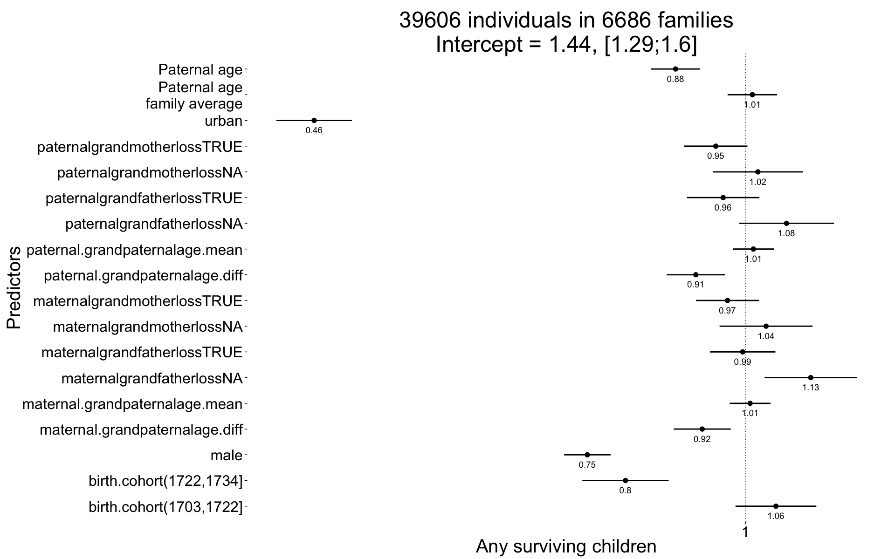
children surviving first 5 years, extended controls
Any_surviving_children_gploss <- glmer(
children.surviving5y > 0 ~ scale(dependent_sibs_f5y) + maternalage.factor + paternalloss + maternalloss + scale(nr.siblings) + birth.cohort + male + urban + paternalage.mean + paternalage.diff + maternal.grandpaternalage.diff + maternal.grandpaternalage.mean + paternal.grandpaternalage.diff + paternal.grandpaternalage.mean + maternalgrandfatherloss + paternalgrandfatherloss + maternalgrandmotherloss + paternalgrandmotherloss + (1|idParents) + (1|idPaternalGrandparents) + (1|idMaternalGrandparents),
data= rpqa.1, subset = byear <= 1740,
family = 'binomial', control = control_defaults )
summary(Any_surviving_children_gploss)## Generalized linear mixed model fit by maximum likelihood (Laplace
## Approximation) [glmerMod]
## Family: binomial ( logit )
## Formula:
## children.surviving5y > 0 ~ scale(dependent_sibs_f5y) + maternalage.factor +
## paternalloss + maternalloss + scale(nr.siblings) + birth.cohort +
## male + urban + paternalage.mean + paternalage.diff + maternal.grandpaternalage.diff +
## maternal.grandpaternalage.mean + paternal.grandpaternalage.diff +
## paternal.grandpaternalage.mean + maternalgrandfatherloss +
## paternalgrandfatherloss + maternalgrandmotherloss + paternalgrandmotherloss +
## (1 | idParents) + (1 | idPaternalGrandparents) + (1 | idMaternalGrandparents)
## Data: rpqa.1
## Control: control_defaults
## Subset: byear <= 1740
##
## AIC BIC logLik deviance df.resid
## 55736 55987 -27839 55678 41522
##
## Scaled residuals:
## Min 1Q Median 3Q Max
## -1.929 -0.941 0.595 0.883 2.463
##
## Random effects:
## Groups Name Variance Std.Dev.
## idParents (Intercept) 0.1046 0.323
## idMaternalGrandparents (Intercept) 0.0892 0.299
## idPaternalGrandparents (Intercept) 0.0604 0.246
## Number of obs: 41551, groups:
## idParents, 6664; idMaternalGrandparents, 3549; idPaternalGrandparents, 3312
##
## Fixed effects:
## Estimate Std. Error z value Pr(>|z|)
## (Intercept) 0.46387 0.05681 8.17 3.2e-16 ***
## scale(dependent_sibs_f5y) -0.03579 0.01388 -2.58 0.0099 **
## maternalage.factor(14,20] -0.06622 0.04837 -1.37 0.1710
## maternalage.factor(35,50] -0.09333 0.03801 -2.46 0.0141 *
## paternalloss -0.12009 0.05201 -2.31 0.0210 *
## maternalloss -0.49384 0.04915 -10.05 < 2e-16 ***
## scale(nr.siblings) -0.02640 0.01526 -1.73 0.0837 .
## birth.cohort(1703,1722] 0.05673 0.04143 1.37 0.1709
## birth.cohort(1722,1734] -0.23179 0.04362 -5.31 1.1e-07 ***
## birth.cohort(1734,1743] -0.12939 0.04651 -2.78 0.0054 **
## male -0.28304 0.02099 -13.48 < 2e-16 ***
## urban -0.73919 0.03460 -21.37 < 2e-16 ***
## paternalage.mean -0.03786 0.02365 -1.60 0.1094
## paternalage.diff -0.06978 0.03020 -2.31 0.0208 *
## maternal.grandpaternalage.diff -0.06084 0.02615 -2.33 0.0200 *
## maternal.grandpaternalage.mean 0.00769 0.01843 0.42 0.6765
## paternal.grandpaternalage.diff -0.07925 0.02660 -2.98 0.0029 **
## paternal.grandpaternalage.mean 0.02039 0.01826 1.12 0.2641
## maternalgrandfatherlossTRUE -0.00686 0.02932 -0.23 0.8150
## maternalgrandfatherlossNA 0.07200 0.04295 1.68 0.0937 .
## paternalgrandfatherlossTRUE -0.04290 0.03212 -1.34 0.1817
## paternalgrandfatherlossNA 0.07607 0.04389 1.73 0.0831 .
## maternalgrandmotherlossTRUE -0.02365 0.02804 -0.84 0.3991
## maternalgrandmotherlossNA 0.02310 0.04432 0.52 0.6022
## paternalgrandmotherlossTRUE -0.05471 0.02811 -1.95 0.0516 .
## paternalgrandmotherlossNA -0.00151 0.04193 -0.04 0.9714
## ---
## Signif. codes: 0 '***' 0.001 '**' 0.01 '*' 0.05 '.' 0.1 ' ' 1##
## Correlation matrix not shown by default, as p = 26 > 20.
## Use print(x, correlation=TRUE) or
## vcov(x) if you need itAny_surviving_children_gploss_coefs = fortify_mine(Any_surviving_children_gploss)
plot_fortified_mer(Any_surviving_children_gploss_coefs, "Any surviving children")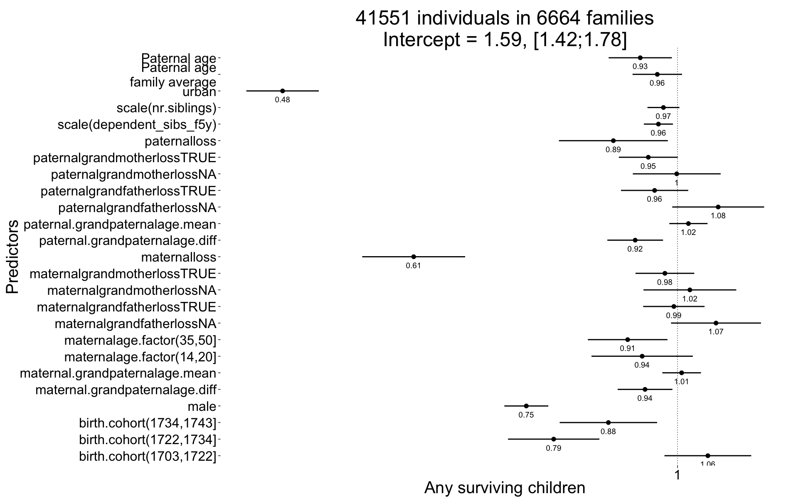
MCMCglmm
Link to analysis script.
loadRDS("coefs/rpqa_Children_surviving5y_all_linear_grandparents.rds")
load("rpqa_grandparents.rdata")
y10_diff_rpqa = compute_and_plot_linear_response(rpqa_Children_surviving5y_all_linear_grandparents, mcmcglmm_data = rpqa.1)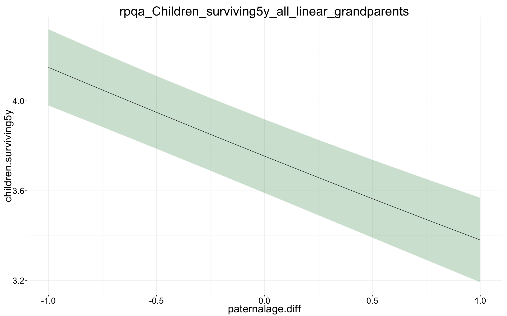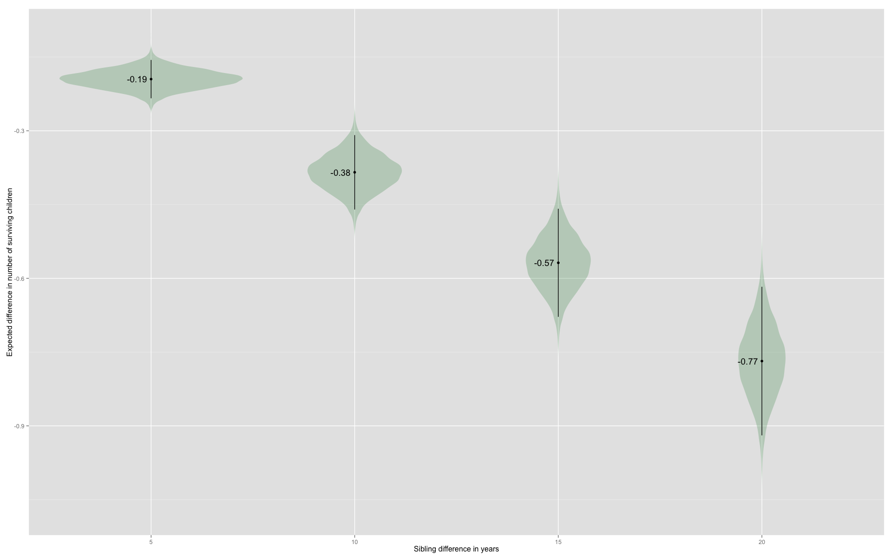
pander(y10_diff_rpqa)| X. | mean | lower | upper |
|---|---|---|---|
| difference (father 10 years older) | -0.38 | -0.46 | -0.31 |
| quotient (father 10 years older) | 0.9 | 0.88 | 0.92 |
y10_diff_rpqa = compute_and_plot_linear_response(rpqa_Children_surviving5y_all_linear_grandparents, mcmcglmm_data = rpqa.1, factor_base = "maternal.grandpaternalage.diff") 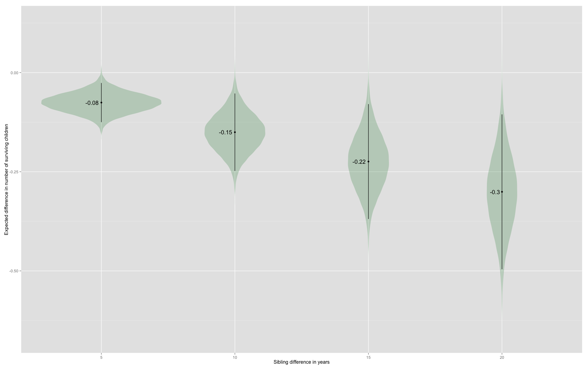
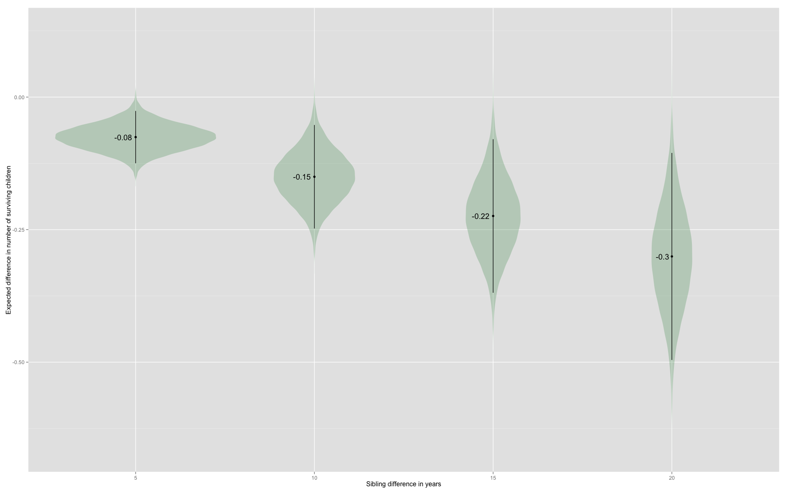
pander(y10_diff_rpqa)| X. | mean | lower | upper |
|---|---|---|---|
| difference (father 10 years older) | -0.15 | -0.25 | -0.06 |
| quotient (father 10 years older) | 0.96 | 0.94 | 0.98 |
y10_diff_rpqa = compute_and_plot_linear_response(rpqa_Children_surviving5y_all_linear_grandparents, mcmcglmm_data = rpqa.1, factor_base = "paternal.grandpaternalage.diff")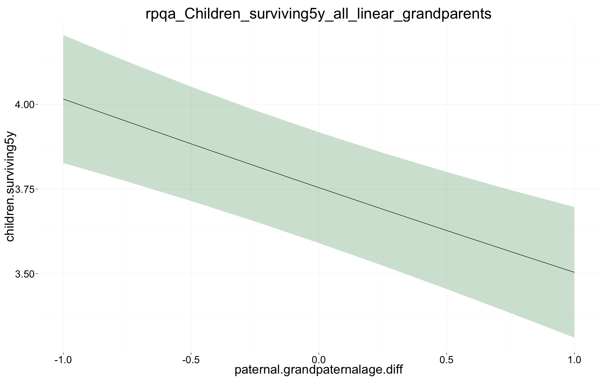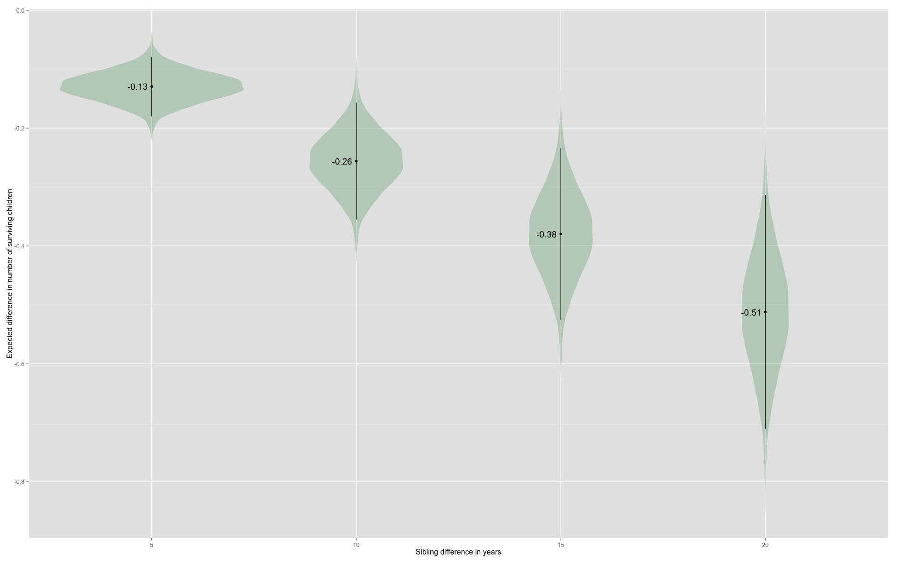
pander(y10_diff_rpqa)| X. | mean | lower | upper |
|---|---|---|---|
| difference (father 10 years older) | -0.26 | -0.35 | -0.16 |
| quotient (father 10 years older) | 0.93 | 0.91 | 0.96 |
Diagnostics
post_process_mcmcglmm( rpqa_Children_surviving5y_all_linear_grandparents )## Potential scale reduction factors:
##
## Point est.
## traitchildren.surviving5y 1
## traitza_children.surviving5y 1
## birth.cohort(1703,1722] 1
## birth.cohort(1722,1734] 1
## birth.cohort(1734,1743] 1
## male 1
## urban 1
## paternalage.mean 1
## paternalage.diff 1
## maternal.grandpaternalage.diff 1
## maternal.grandpaternalage.mean 1
## paternal.grandpaternalage.diff 1
## paternal.grandpaternalage.mean 1
## traitza_children.surviving5y:birth.cohort(1703,1722] 1
## traitza_children.surviving5y:birth.cohort(1722,1734] 1
## traitza_children.surviving5y:birth.cohort(1734,1743] 1
## traitza_children.surviving5y:male 1
## traitza_children.surviving5y:urban 1
## traitza_children.surviving5y:paternalage.mean 1
## traitza_children.surviving5y:paternalage.diff 1
## traitza_children.surviving5y:maternal.grandpaternalage.diff 1
## traitza_children.surviving5y:maternal.grandpaternalage.mean 1
## traitza_children.surviving5y:paternal.grandpaternalage.diff 1
## traitza_children.surviving5y:paternal.grandpaternalage.mean 1
## Upper C.I.
## traitchildren.surviving5y 1
## traitza_children.surviving5y 1
## birth.cohort(1703,1722] 1
## birth.cohort(1722,1734] 1
## birth.cohort(1734,1743] 1
## male 1
## urban 1
## paternalage.mean 1
## paternalage.diff 1
## maternal.grandpaternalage.diff 1
## maternal.grandpaternalage.mean 1
## paternal.grandpaternalage.diff 1
## paternal.grandpaternalage.mean 1
## traitza_children.surviving5y:birth.cohort(1703,1722] 1
## traitza_children.surviving5y:birth.cohort(1722,1734] 1
## traitza_children.surviving5y:birth.cohort(1734,1743] 1
## traitza_children.surviving5y:male 1
## traitza_children.surviving5y:urban 1
## traitza_children.surviving5y:paternalage.mean 1
## traitza_children.surviving5y:paternalage.diff 1
## traitza_children.surviving5y:maternal.grandpaternalage.diff 1
## traitza_children.surviving5y:maternal.grandpaternalage.mean 1
## traitza_children.surviving5y:paternal.grandpaternalage.diff 1
## traitza_children.surviving5y:paternal.grandpaternalage.mean 1
##
## Multivariate psrf
##
## 1
## Potential scale reduction factors:
##
## Point est. Upper C.I.
## traitchildren.surviving5y.idParents 1 1
## traitza_children.surviving5y.idParents 1 1
## traitchildren.surviving5y.idMaternalGrandparents 1 1
## traitza_children.surviving5y.idMaternalGrandparents 1 1
## traitchildren.surviving5y.idPaternalGrandparents 1 1
## traitza_children.surviving5y.idPaternalGrandparents 1 1
## traitchildren.surviving5y.units 1 1
##
## Multivariate psrf
##
## 1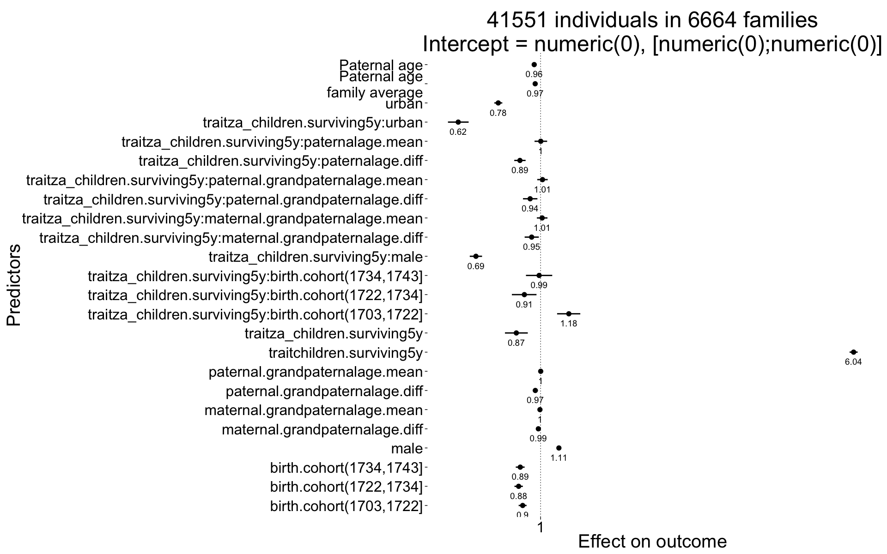
## NULL
##
## Iterations = 10001:109901
## Thinning interval = 100
## Number of chains = 15
## Sample size per chain = 1000
##
## 1. Empirical mean and standard deviation for each variable,
## plus standard error of the mean:
##
## Mean
## traitchildren.surviving5y 1.798809
## traitza_children.surviving5y -0.139460
## birth.cohort(1703,1722] -0.103104
## birth.cohort(1722,1734] -0.126147
## birth.cohort(1734,1743] -0.116942
## male 0.105157
## urban -0.243207
## paternalage.mean -0.031064
## paternalage.diff -0.036815
## maternal.grandpaternalage.diff -0.012916
## maternal.grandpaternalage.mean -0.003713
## paternal.grandpaternalage.diff -0.030325
## paternal.grandpaternalage.mean 0.000629
## traitza_children.surviving5y:birth.cohort(1703,1722] 0.161939
## traitza_children.surviving5y:birth.cohort(1722,1734] -0.093584
## traitza_children.surviving5y:birth.cohort(1734,1743] -0.008237
## traitza_children.surviving5y:male -0.371729
## traitza_children.surviving5y:urban -0.473455
## traitza_children.surviving5y:paternalage.mean 0.001100
## traitza_children.surviving5y:paternalage.diff -0.118821
## traitza_children.surviving5y:maternal.grandpaternalage.diff -0.051334
## traitza_children.surviving5y:maternal.grandpaternalage.mean 0.008934
## traitza_children.surviving5y:paternal.grandpaternalage.diff -0.059976
## traitza_children.surviving5y:paternal.grandpaternalage.mean 0.010788
## SD
## traitchildren.surviving5y 0.01406
## traitza_children.surviving5y 0.03953
## birth.cohort(1703,1722] 0.01372
## birth.cohort(1722,1734] 0.01461
## birth.cohort(1734,1743] 0.01544
## male 0.00750
## urban 0.01399
## paternalage.mean 0.00781
## paternalage.diff 0.00696
## maternal.grandpaternalage.diff 0.00861
## maternal.grandpaternalage.mean 0.00634
## paternal.grandpaternalage.diff 0.00874
## paternal.grandpaternalage.mean 0.00632
## traitza_children.surviving5y:birth.cohort(1703,1722] 0.04064
## traitza_children.surviving5y:birth.cohort(1722,1734] 0.04286
## traitza_children.surviving5y:birth.cohort(1734,1743] 0.04590
## traitza_children.surviving5y:male 0.02134
## traitza_children.surviving5y:urban 0.03625
## traitza_children.surviving5y:paternalage.mean 0.02207
## traitza_children.surviving5y:paternalage.diff 0.01985
## traitza_children.surviving5y:maternal.grandpaternalage.diff 0.02496
## traitza_children.surviving5y:maternal.grandpaternalage.mean 0.01859
## traitza_children.surviving5y:paternal.grandpaternalage.diff 0.02522
## traitza_children.surviving5y:paternal.grandpaternalage.mean 0.01840
## Naive SE
## traitchildren.surviving5y 0.0001148
## traitza_children.surviving5y 0.0003228
## birth.cohort(1703,1722] 0.0001120
## birth.cohort(1722,1734] 0.0001193
## birth.cohort(1734,1743] 0.0001261
## male 0.0000612
## urban 0.0001143
## paternalage.mean 0.0000638
## paternalage.diff 0.0000568
## maternal.grandpaternalage.diff 0.0000703
## maternal.grandpaternalage.mean 0.0000518
## paternal.grandpaternalage.diff 0.0000714
## paternal.grandpaternalage.mean 0.0000516
## traitza_children.surviving5y:birth.cohort(1703,1722] 0.0003319
## traitza_children.surviving5y:birth.cohort(1722,1734] 0.0003499
## traitza_children.surviving5y:birth.cohort(1734,1743] 0.0003748
## traitza_children.surviving5y:male 0.0001742
## traitza_children.surviving5y:urban 0.0002960
## traitza_children.surviving5y:paternalage.mean 0.0001802
## traitza_children.surviving5y:paternalage.diff 0.0001621
## traitza_children.surviving5y:maternal.grandpaternalage.diff 0.0002038
## traitza_children.surviving5y:maternal.grandpaternalage.mean 0.0001518
## traitza_children.surviving5y:paternal.grandpaternalage.diff 0.0002059
## traitza_children.surviving5y:paternal.grandpaternalage.mean 0.0001503
## Time-series SE
## traitchildren.surviving5y 0.0001156
## traitza_children.surviving5y 0.0003196
## birth.cohort(1703,1722] 0.0001120
## birth.cohort(1722,1734] 0.0001190
## birth.cohort(1734,1743] 0.0001261
## male 0.0000621
## urban 0.0001199
## paternalage.mean 0.0000638
## paternalage.diff 0.0000576
## maternal.grandpaternalage.diff 0.0000717
## maternal.grandpaternalage.mean 0.0000525
## paternal.grandpaternalage.diff 0.0000715
## paternal.grandpaternalage.mean 0.0000506
## traitza_children.surviving5y:birth.cohort(1703,1722] 0.0003328
## traitza_children.surviving5y:birth.cohort(1722,1734] 0.0003454
## traitza_children.surviving5y:birth.cohort(1734,1743] 0.0003721
## traitza_children.surviving5y:male 0.0001743
## traitza_children.surviving5y:urban 0.0002995
## traitza_children.surviving5y:paternalage.mean 0.0001778
## traitza_children.surviving5y:paternalage.diff 0.0001589
## traitza_children.surviving5y:maternal.grandpaternalage.diff 0.0002074
## traitza_children.surviving5y:maternal.grandpaternalage.mean 0.0001511
## traitza_children.surviving5y:paternal.grandpaternalage.diff 0.0002078
## traitza_children.surviving5y:paternal.grandpaternalage.mean 0.0001495
##
## 2. Quantiles for each variable:
##
## 2.5%
## traitchildren.surviving5y 1.7716
## traitza_children.surviving5y -0.2174
## birth.cohort(1703,1722] -0.1302
## birth.cohort(1722,1734] -0.1550
## birth.cohort(1734,1743] -0.1476
## male 0.0907
## urban -0.2706
## paternalage.mean -0.0461
## paternalage.diff -0.0505
## maternal.grandpaternalage.diff -0.0299
## maternal.grandpaternalage.mean -0.0160
## paternal.grandpaternalage.diff -0.0474
## paternal.grandpaternalage.mean -0.0117
## traitza_children.surviving5y:birth.cohort(1703,1722] 0.0816
## traitza_children.surviving5y:birth.cohort(1722,1734] -0.1778
## traitza_children.surviving5y:birth.cohort(1734,1743] -0.0986
## traitza_children.surviving5y:male -0.4136
## traitza_children.surviving5y:urban -0.5451
## traitza_children.surviving5y:paternalage.mean -0.0421
## traitza_children.surviving5y:paternalage.diff -0.1582
## traitza_children.surviving5y:maternal.grandpaternalage.diff -0.1000
## traitza_children.surviving5y:maternal.grandpaternalage.mean -0.0271
## traitza_children.surviving5y:paternal.grandpaternalage.diff -0.1092
## traitza_children.surviving5y:paternal.grandpaternalage.mean -0.0253
## 25%
## traitchildren.surviving5y 1.78937
## traitza_children.surviving5y -0.16592
## birth.cohort(1703,1722] -0.11241
## birth.cohort(1722,1734] -0.13603
## birth.cohort(1734,1743] -0.12726
## male 0.10010
## urban -0.25262
## paternalage.mean -0.03634
## paternalage.diff -0.04151
## maternal.grandpaternalage.diff -0.01869
## maternal.grandpaternalage.mean -0.00802
## paternal.grandpaternalage.diff -0.03616
## paternal.grandpaternalage.mean -0.00365
## traitza_children.surviving5y:birth.cohort(1703,1722] 0.13485
## traitza_children.surviving5y:birth.cohort(1722,1734] -0.12283
## traitza_children.surviving5y:birth.cohort(1734,1743] -0.03905
## traitza_children.surviving5y:male -0.38612
## traitza_children.surviving5y:urban -0.49799
## traitza_children.surviving5y:paternalage.mean -0.01383
## traitza_children.surviving5y:paternalage.diff -0.13207
## traitza_children.surviving5y:maternal.grandpaternalage.diff -0.06809
## traitza_children.surviving5y:maternal.grandpaternalage.mean -0.00388
## traitza_children.surviving5y:paternal.grandpaternalage.diff -0.07689
## traitza_children.surviving5y:paternal.grandpaternalage.mean -0.00163
## 50%
## traitchildren.surviving5y 1.798833
## traitza_children.surviving5y -0.139546
## birth.cohort(1703,1722] -0.103055
## birth.cohort(1722,1734] -0.126218
## birth.cohort(1734,1743] -0.116868
## male 0.105103
## urban -0.243368
## paternalage.mean -0.031141
## paternalage.diff -0.036743
## maternal.grandpaternalage.diff -0.012908
## maternal.grandpaternalage.mean -0.003727
## paternal.grandpaternalage.diff -0.030364
## paternal.grandpaternalage.mean 0.000635
## traitza_children.surviving5y:birth.cohort(1703,1722] 0.162221
## traitza_children.surviving5y:birth.cohort(1722,1734] -0.093309
## traitza_children.surviving5y:birth.cohort(1734,1743] -0.008469
## traitza_children.surviving5y:male -0.371688
## traitza_children.surviving5y:urban -0.473449
## traitza_children.surviving5y:paternalage.mean 0.000969
## traitza_children.surviving5y:paternalage.diff -0.118787
## traitza_children.surviving5y:maternal.grandpaternalage.diff -0.051414
## traitza_children.surviving5y:maternal.grandpaternalage.mean 0.008991
## traitza_children.surviving5y:paternal.grandpaternalage.diff -0.060119
## traitza_children.surviving5y:paternal.grandpaternalage.mean 0.010994
## 75%
## traitchildren.surviving5y 1.808181
## traitza_children.surviving5y -0.113133
## birth.cohort(1703,1722] -0.093772
## birth.cohort(1722,1734] -0.116289
## birth.cohort(1734,1743] -0.106508
## male 0.110238
## urban -0.233788
## paternalage.mean -0.025805
## paternalage.diff -0.032116
## maternal.grandpaternalage.diff -0.007086
## maternal.grandpaternalage.mean 0.000554
## paternal.grandpaternalage.diff -0.024420
## paternal.grandpaternalage.mean 0.004845
## traitza_children.surviving5y:birth.cohort(1703,1722] 0.189345
## traitza_children.surviving5y:birth.cohort(1722,1734] -0.064644
## traitza_children.surviving5y:birth.cohort(1734,1743] 0.022853
## traitza_children.surviving5y:male -0.357238
## traitza_children.surviving5y:urban -0.449221
## traitza_children.surviving5y:paternalage.mean 0.016092
## traitza_children.surviving5y:paternalage.diff -0.105390
## traitza_children.surviving5y:maternal.grandpaternalage.diff -0.034644
## traitza_children.surviving5y:maternal.grandpaternalage.mean 0.021530
## traitza_children.surviving5y:paternal.grandpaternalage.diff -0.042819
## traitza_children.surviving5y:paternal.grandpaternalage.mean 0.023158
## 97.5%
## traitchildren.surviving5y 1.82640
## traitza_children.surviving5y -0.06233
## birth.cohort(1703,1722] -0.07669
## birth.cohort(1722,1734] -0.09774
## birth.cohort(1734,1743] -0.08664
## male 0.11990
## urban -0.21602
## paternalage.mean -0.01569
## paternalage.diff -0.02309
## maternal.grandpaternalage.diff 0.00388
## maternal.grandpaternalage.mean 0.00880
## paternal.grandpaternalage.diff -0.01320
## paternal.grandpaternalage.mean 0.01298
## traitza_children.surviving5y:birth.cohort(1703,1722] 0.24208
## traitza_children.surviving5y:birth.cohort(1722,1734] -0.01129
## traitza_children.surviving5y:birth.cohort(1734,1743] 0.08052
## traitza_children.surviving5y:male -0.33000
## traitza_children.surviving5y:urban -0.40178
## traitza_children.surviving5y:paternalage.mean 0.04467
## traitza_children.surviving5y:paternalage.diff -0.08012
## traitza_children.surviving5y:maternal.grandpaternalage.diff -0.00203
## traitza_children.surviving5y:maternal.grandpaternalage.mean 0.04493
## traitza_children.surviving5y:paternal.grandpaternalage.diff -0.01111
## traitza_children.surviving5y:paternal.grandpaternalage.mean 0.04706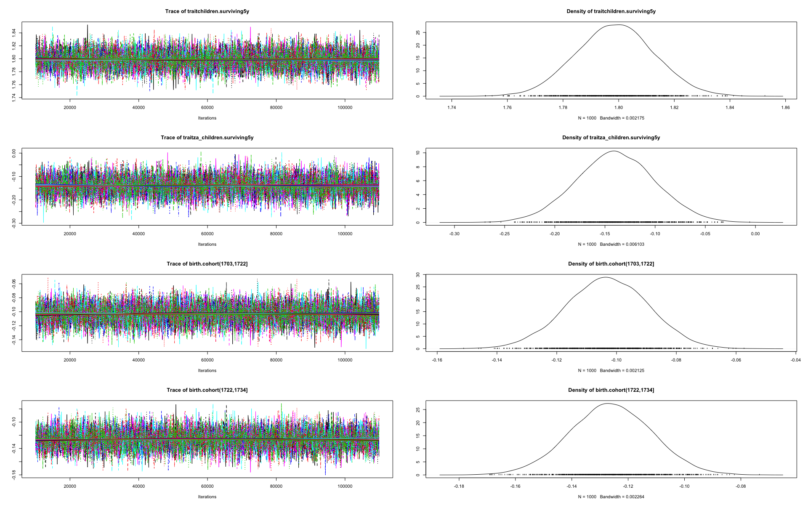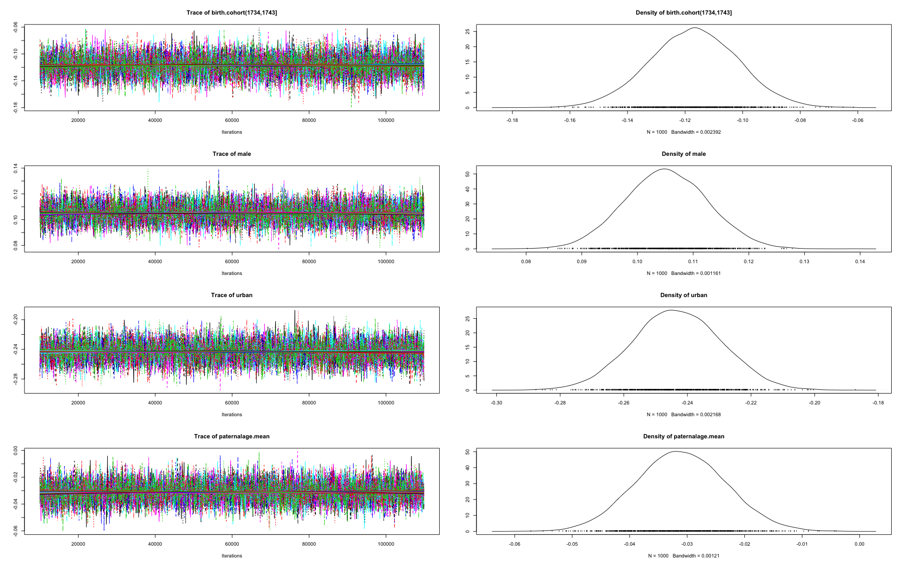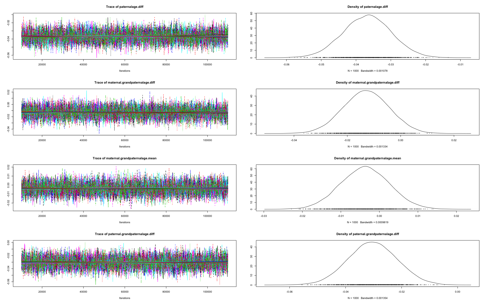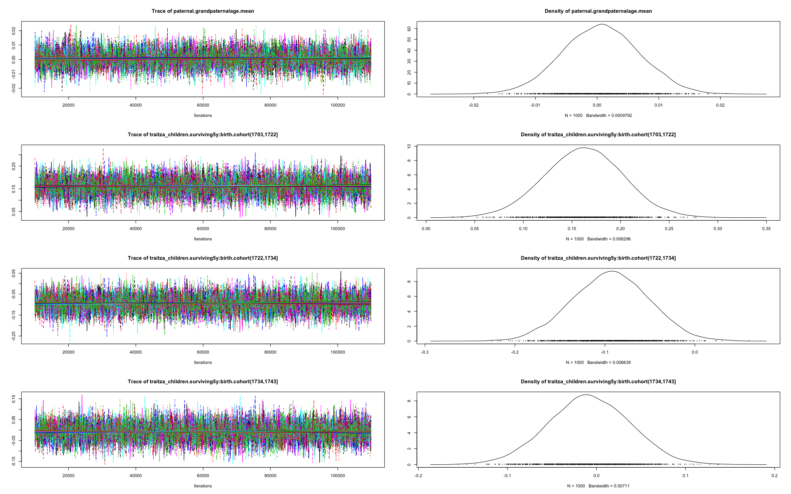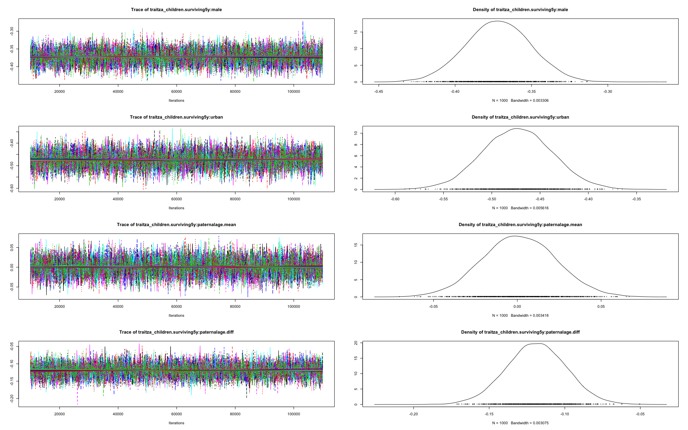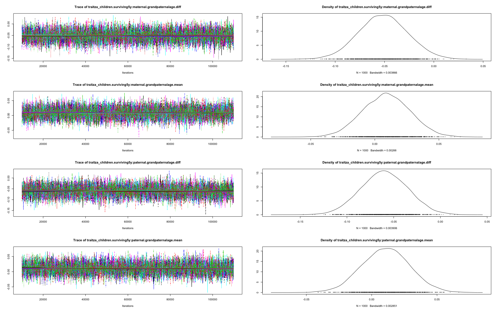
## NULL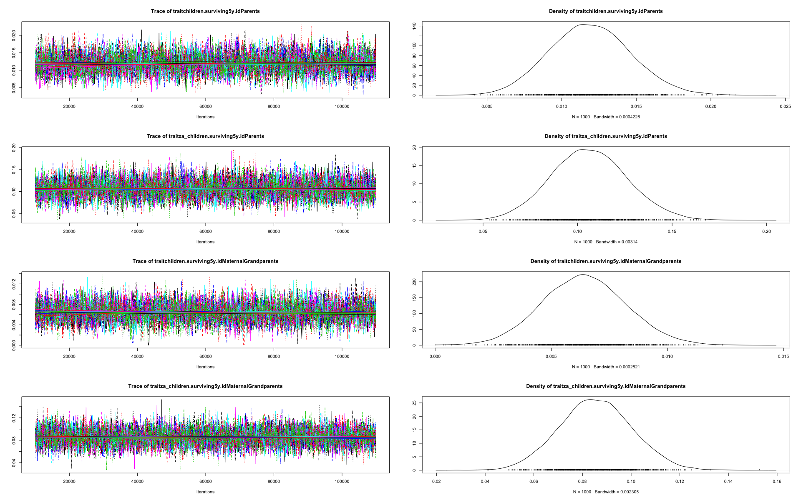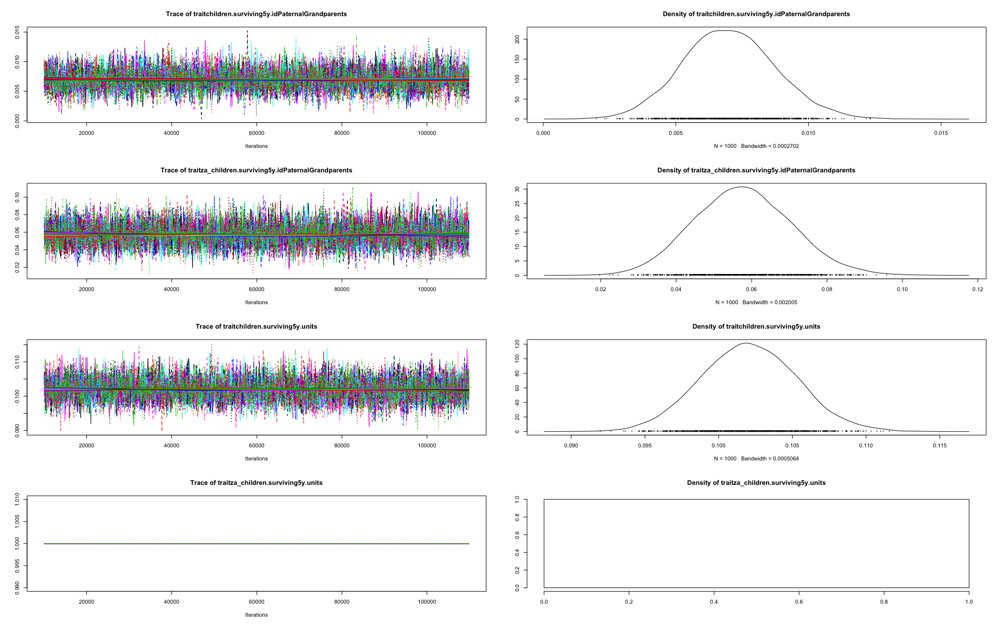
## NULL
## traitchildren.surviving5y
## 14875
## traitza_children.surviving5y
## 15330
## birth.cohort(1703,1722]
## 15112
## birth.cohort(1722,1734]
## 15152
## birth.cohort(1734,1743]
## 15100
## male
## 14686
## urban
## 13740
## paternalage.mean
## 15135
## paternalage.diff
## 14697
## maternal.grandpaternalage.diff
## 14766
## maternal.grandpaternalage.mean
## 14607
## paternal.grandpaternalage.diff
## 15164
## paternal.grandpaternalage.mean
## 16124
## traitza_children.surviving5y:birth.cohort(1703,1722]
## 15162
## traitza_children.surviving5y:birth.cohort(1722,1734]
## 15580
## traitza_children.surviving5y:birth.cohort(1734,1743]
## 15418
## traitza_children.surviving5y:male
## 15237
## traitza_children.surviving5y:urban
## 14688
## traitza_children.surviving5y:paternalage.mean
## 15505
## traitza_children.surviving5y:paternalage.diff
## 15829
## traitza_children.surviving5y:maternal.grandpaternalage.diff
## 14538
## traitza_children.surviving5y:maternal.grandpaternalage.mean
## 15285
## traitza_children.surviving5y:paternal.grandpaternalage.diff
## 14871
## traitza_children.surviving5y:paternal.grandpaternalage.mean
## 15331
## traitchildren.surviving5y.idParents
## 6458
## traitza_children.surviving5y.idParents
## 9986
## traitchildren.surviving5y.idMaternalGrandparents
## 7422
## traitza_children.surviving5y.idMaternalGrandparents
## 12472
## traitchildren.surviving5y.idPaternalGrandparents
## 8545
## traitza_children.surviving5y.idPaternalGrandparents
## 11170
## traitchildren.surviving5y.units
## 8605
## traitza_children.surviving5y.units
## 0Wrap up
Save coefficients
name = "rpqa_grandparents"
save(list = lstype('confint.merMod'),file=paste0("coefs/",name,"_coefs.rdata"))
save(list = lstype(),file=paste0("coefs/",name,"_models.rdata"))Session Info
sessionInfo()## R version 3.2.0 (2015-04-16)
## Platform: x86_64-apple-darwin13.4.0 (64-bit)
## Running under: OS X 10.10.5 (Yosemite)
##
## locale:
## [1] en_US.UTF-8/en_US.UTF-8/en_US.UTF-8/C/en_US.UTF-8/en_US.UTF-8
##
## attached base packages:
## [1] grid parallel graphics grDevices utils datasets stats
## [8] methods base
##
## other attached packages:
## [1] Hmisc_3.17-0 Formula_1.2-1 survival_2.38-1 lattice_0.20-31
## [5] doMC_1.3.3 iterators_1.0.7 foreach_1.4.2 MCMCglmm_2.22
## [9] ape_3.3 coda_0.17-1 QuantPsyc_1.5 MASS_7.3-40
## [13] boot_1.3-16 lubridate_1.3.3 lme4_1.1-7 Rcpp_0.12.1
## [17] Matrix_1.2-1 stringi_1.0-1 dplyr_0.4.1 pander_0.5.2
## [21] knitr_1.10.5 rmarkdown_0.7 plyr_1.8.3 ggplot2_1.0.1
## [25] formr_0.2.9 data.table_1.9.6 stringr_1.0.0 devtools_1.8.0
##
## loaded via a namespace (and not attached):
## [1] corpcor_1.6.7 assertthat_0.1 digest_0.6.8
## [4] chron_2.3-47 acepack_1.3-3.3 evaluate_0.8
## [7] curl_0.9.3 cubature_1.1-2 minqa_1.2.4
## [10] SparseM_1.6 car_2.0-25 nloptr_1.0.4
## [13] rpart_4.1-9 labeling_0.3 proto_0.3-10
## [16] splines_3.2.0 foreign_0.8-63 munsell_0.4.2
## [19] compiler_3.2.0 rversions_1.0.1 mgcv_1.8-6
## [22] htmltools_0.2.6 nnet_7.3-9 tensorA_0.36
## [25] gridExtra_2.0.0 codetools_0.2-11 nlme_3.1-120
## [28] gtable_0.1.2 DBI_0.3.1 git2r_0.10.1
## [31] magrittr_1.5 formatR_1.2.1 scales_0.3.0
## [34] reshape2_1.4.1 latticeExtra_0.6-26 xml2_0.1.1
## [37] RColorBrewer_1.1-2 tools_3.2.0 pbkrtest_0.4-2
## [40] colorspace_1.2-6 cluster_2.0.1 memoise_0.2.1
## [43] quantreg_5.11date()## [1] "Mon Nov 23 09:43:44 2015"